Raw Kettle
A rebrand for RAW Kettle Cooked Potatoes — refreshing a dated look while maintaining the brand's existing recognition, across a modernized logo (in both English and Arabic), a redesigned packaging system, and the lifestyle photography that carries it.
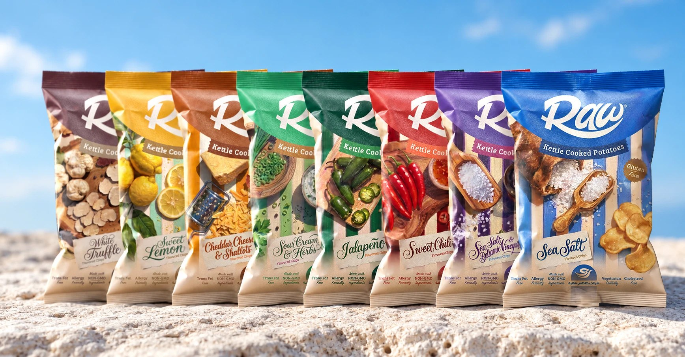
The challenge
RAW's brand identity and packaging had grown dated and stale, while the friendly, familiar character of the original brand — the name, the logo, the striped colour palette — was exactly the equity the client didn't want to lose. The task wasn't a from-scratch rebrand; it was a refresh specific enough to feel modern without breaking the recognition RAW had already built.
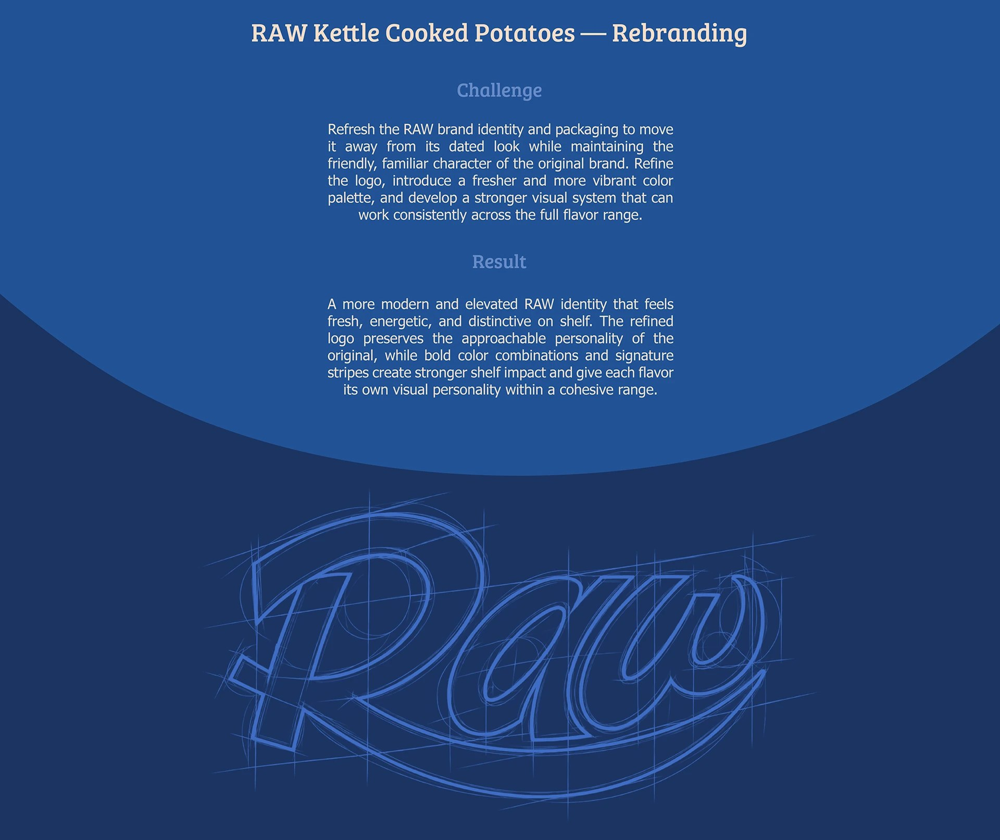
Logo, in two languages
The wordmark itself was refined rather than replaced — the same confident script logotype, tightened and cleaned up — alongside a parallel refresh of the Arabic logotype and a separate Arabic icon mark, since the brand serves both English- and Arabic-reading shelves.
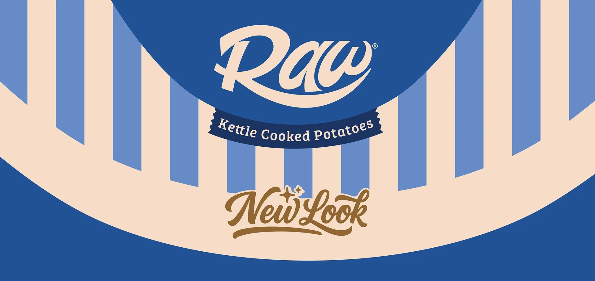
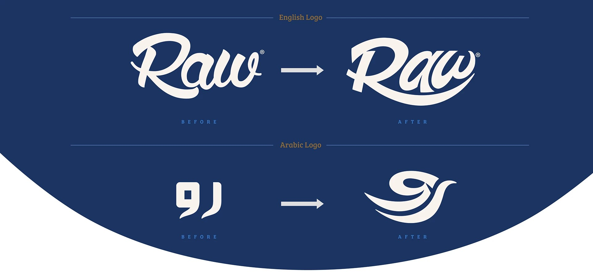
Packaging system & flavor range
The packaging redesign kept the format shoppers already recognised but rebuilt the visual hierarchy — bigger, cleaner logo lockup, a clearer flavor-name treatment, and a signature colour-and-stripe system applied consistently across all eight flavors: Sweet Lemon, Jalapeño, Sweet Chili, Cheddar Cheese & Shallots, Sea Salt, Sea Salt & Balsamic Vinegar, White Truffle and the original Classic.
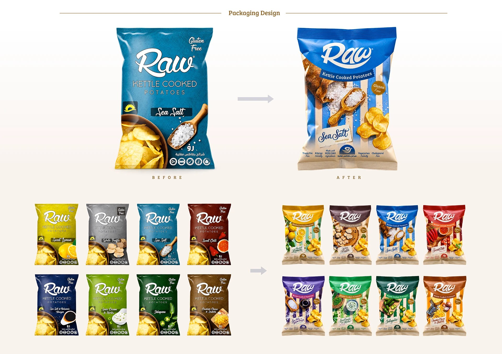
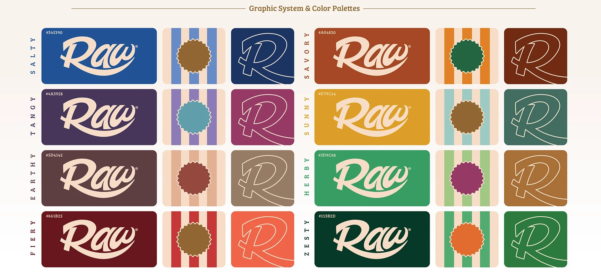
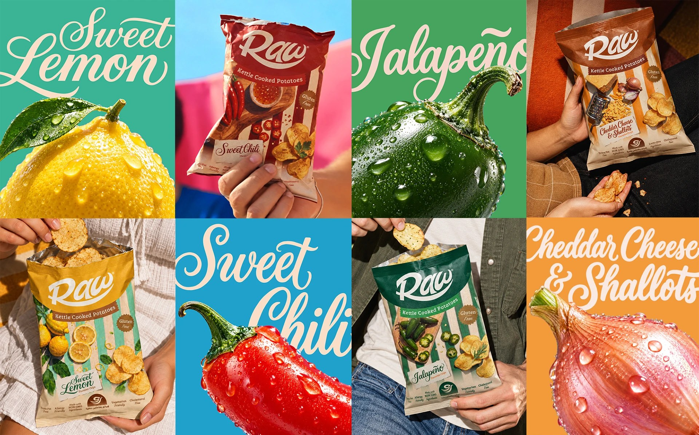
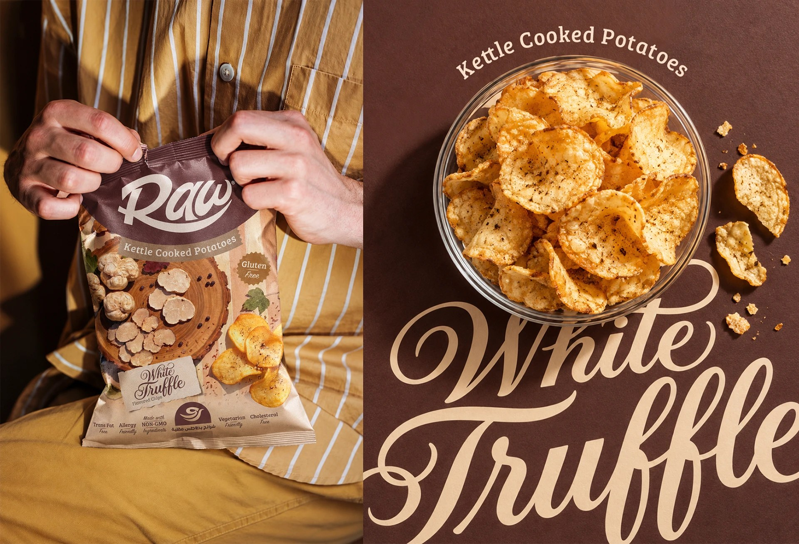
Brought to life
The rebrand was carried through a full lifestyle photography set — picnics, beach days, poolside snacking, social gatherings — showing the new packaging system in the real contexts people actually eat the product, plus the operational side: delivery trucks, stacked shipping boxes and the logo applied at scale.
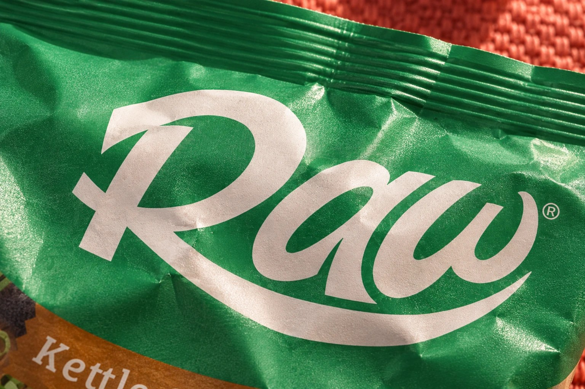
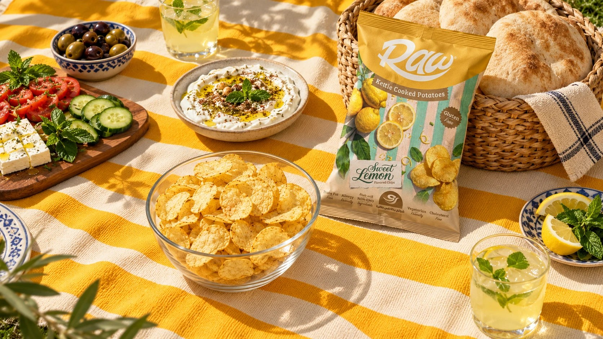
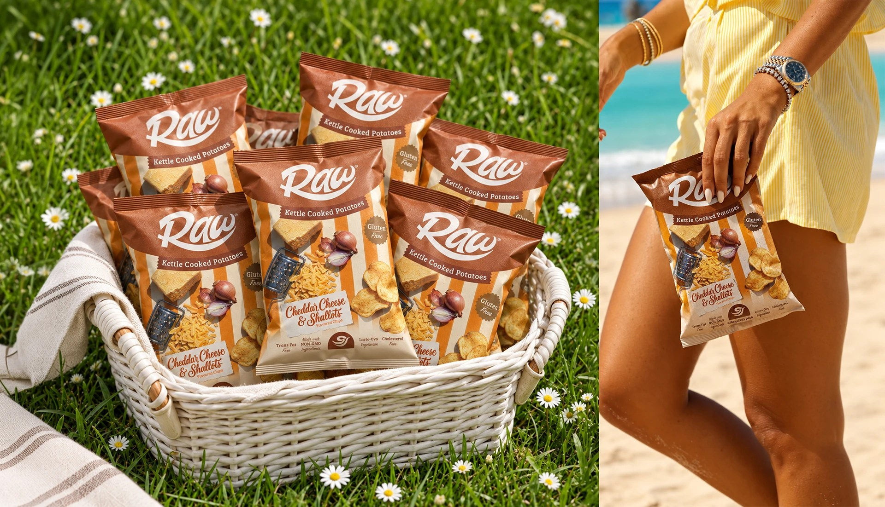
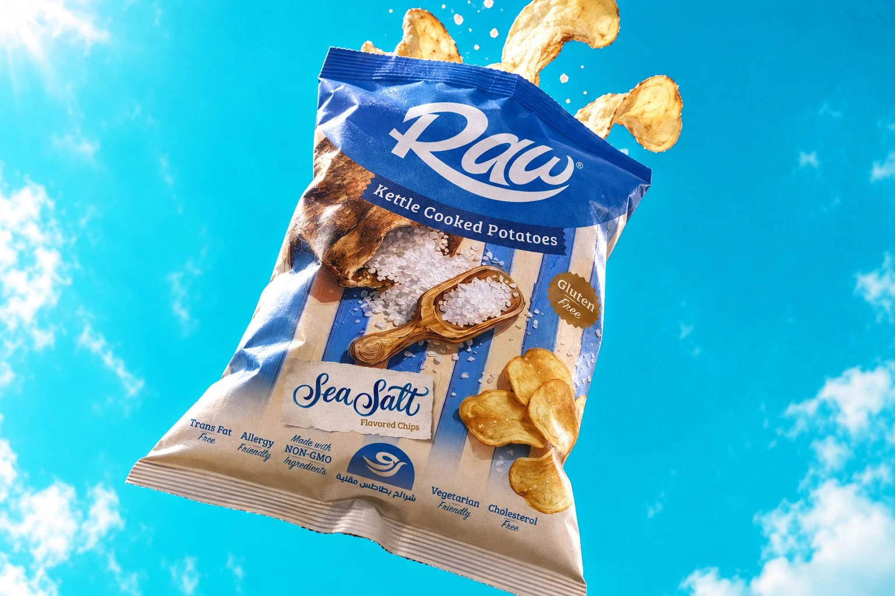
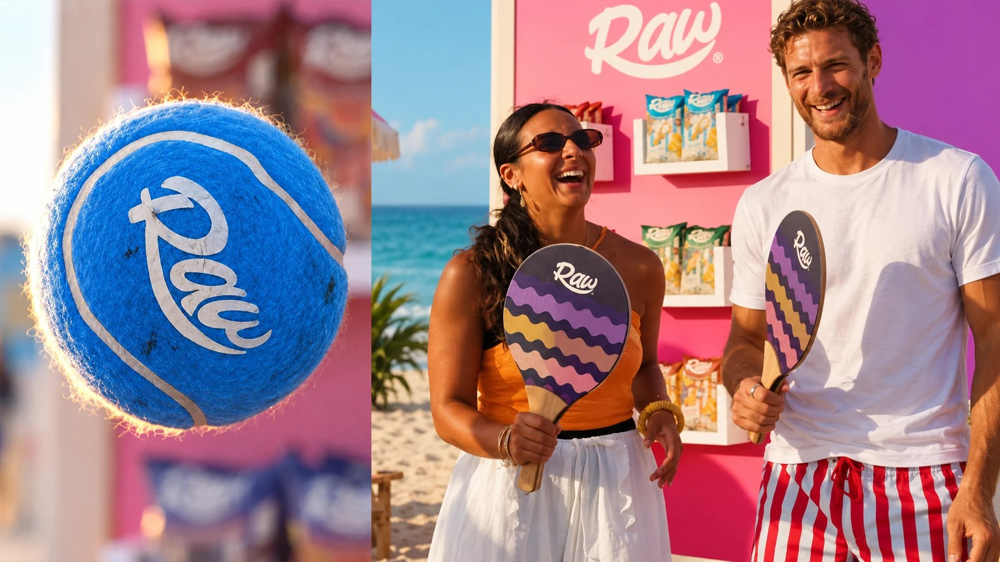
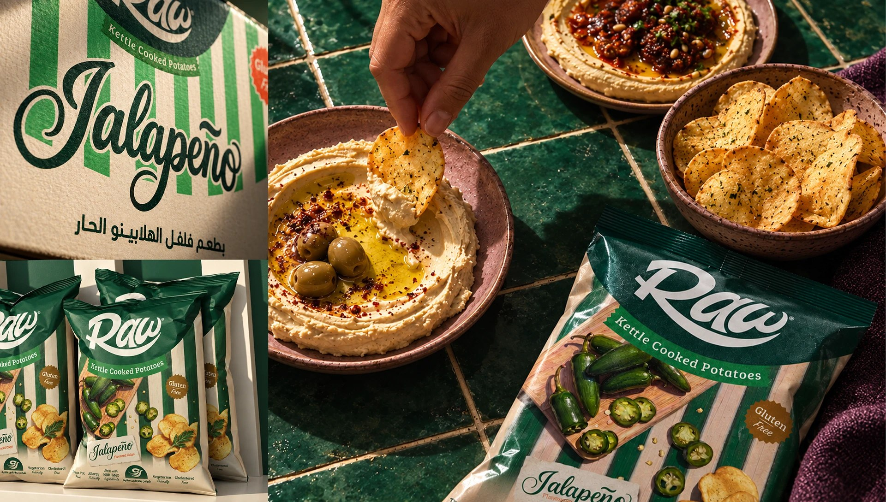
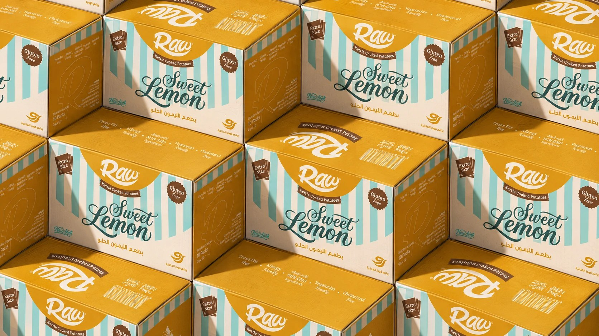
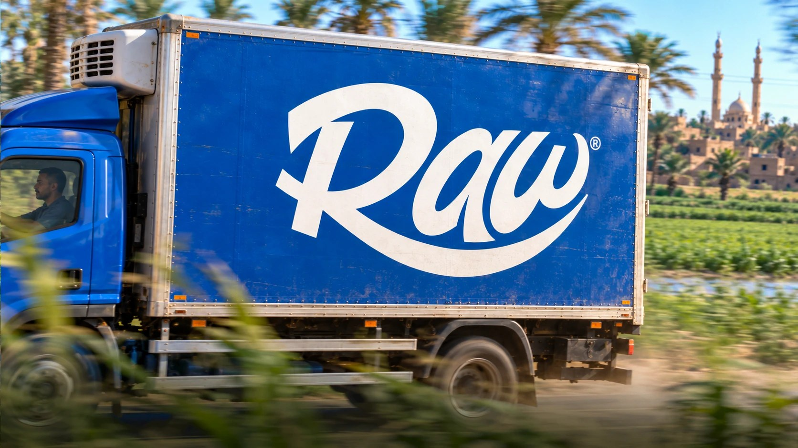
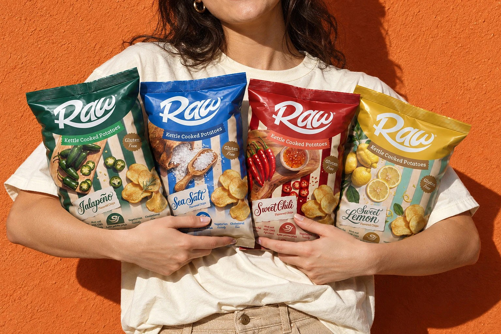
Outcome
A modernized, elevated RAW identity that reads as fresh and distinctive on shelf, while keeping the name recognition and friendly character the brand had already earned — refined rather than replaced, and carried consistently from packaging through delivery trucks.
The discipline here was restraint — resisting the urge to redesign everything, and instead finding the smallest set of changes (the stripe system, the cleaned-up wordmark) that made the whole range look modern at once.